Research
Research Interests
Earthquake Engineering; Engineering Seismology; Ground-Motion Modeling; Seismic Hazard and Risk; Geotechnical Earthquake Engineering; Soil Dynamics and Cyclic Soil Behavior; Spatial Correlation and Non-Ergodic Ground Motions Modeling; Human-Reported Earthquake Intensity; Geospatial Analysis; Data-Driven and Statistical Methods in Earthquake Engineering.
13th National Conference on Earthquake Engineering (13NCEE), Portland, OR.
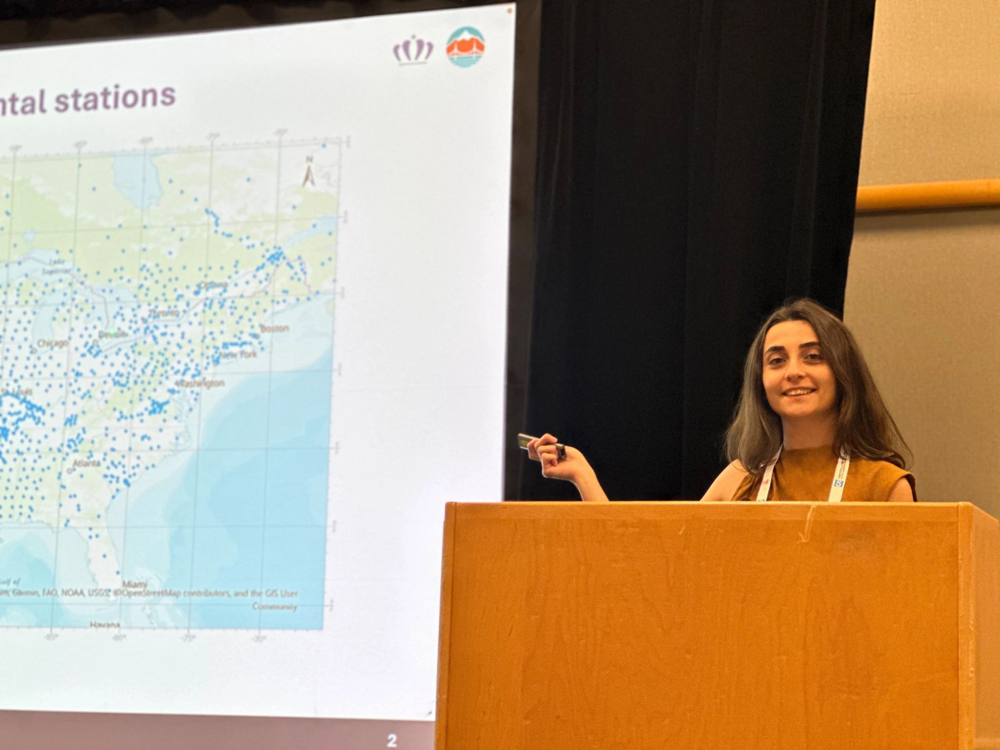
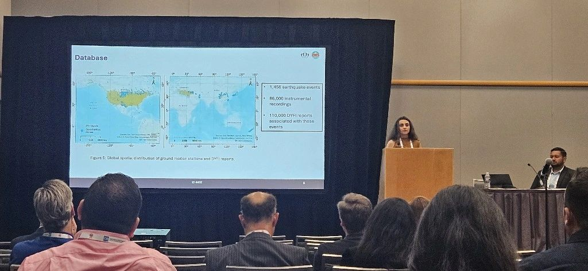
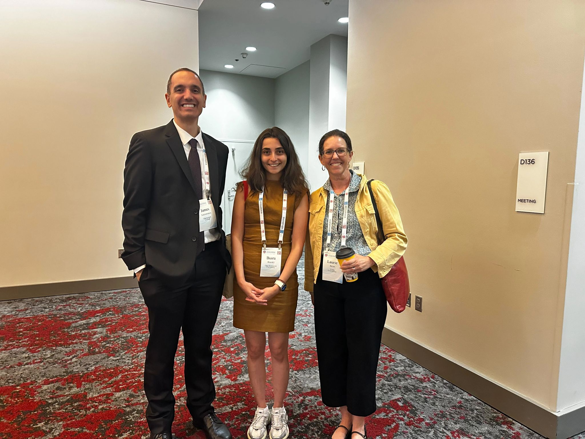
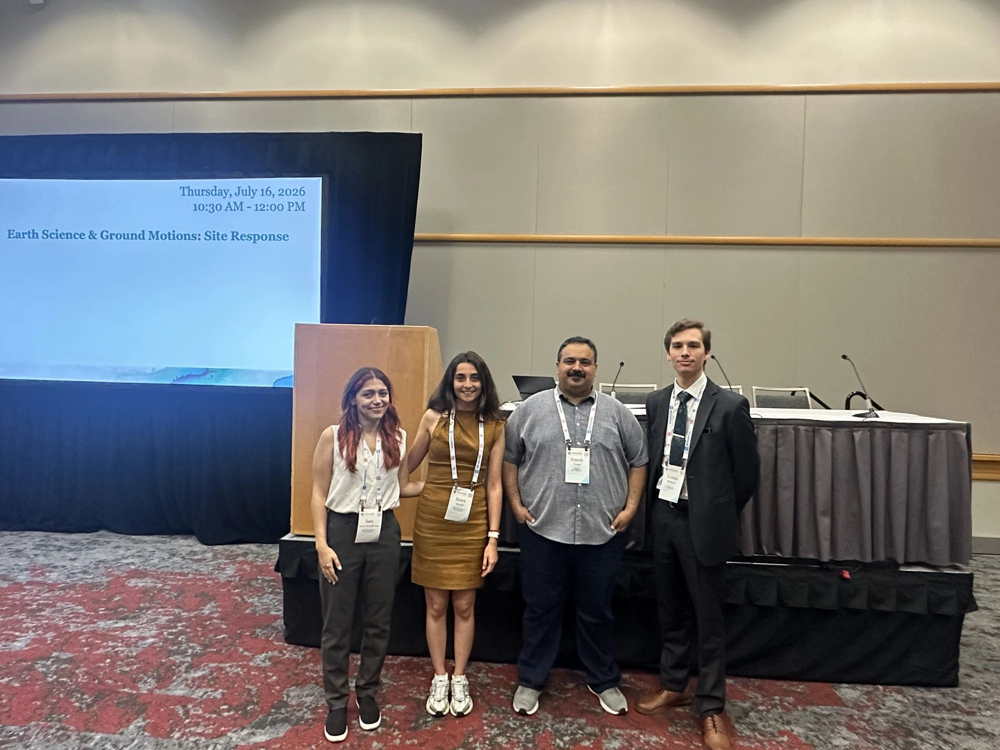
Geotechnical Frontiers 2025, Louisville, KY.
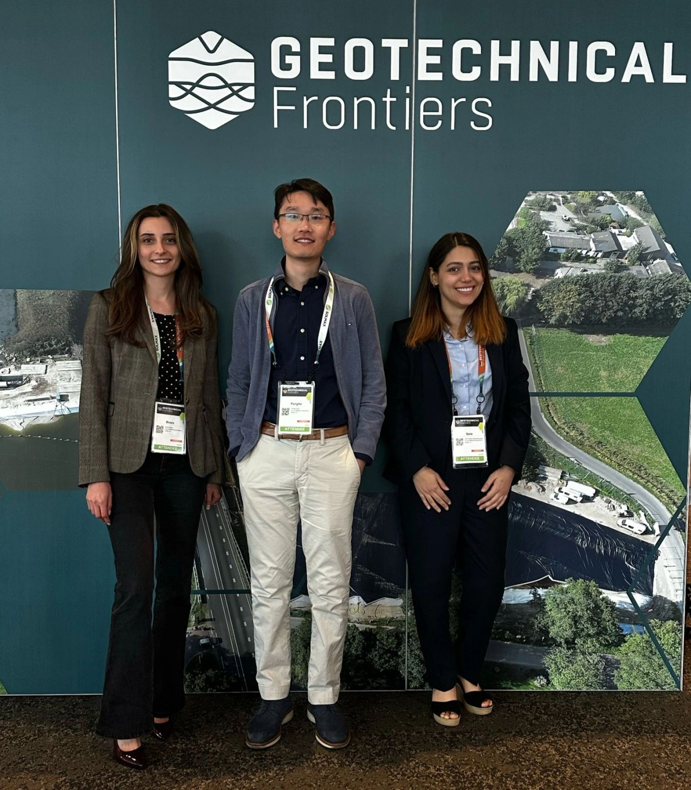
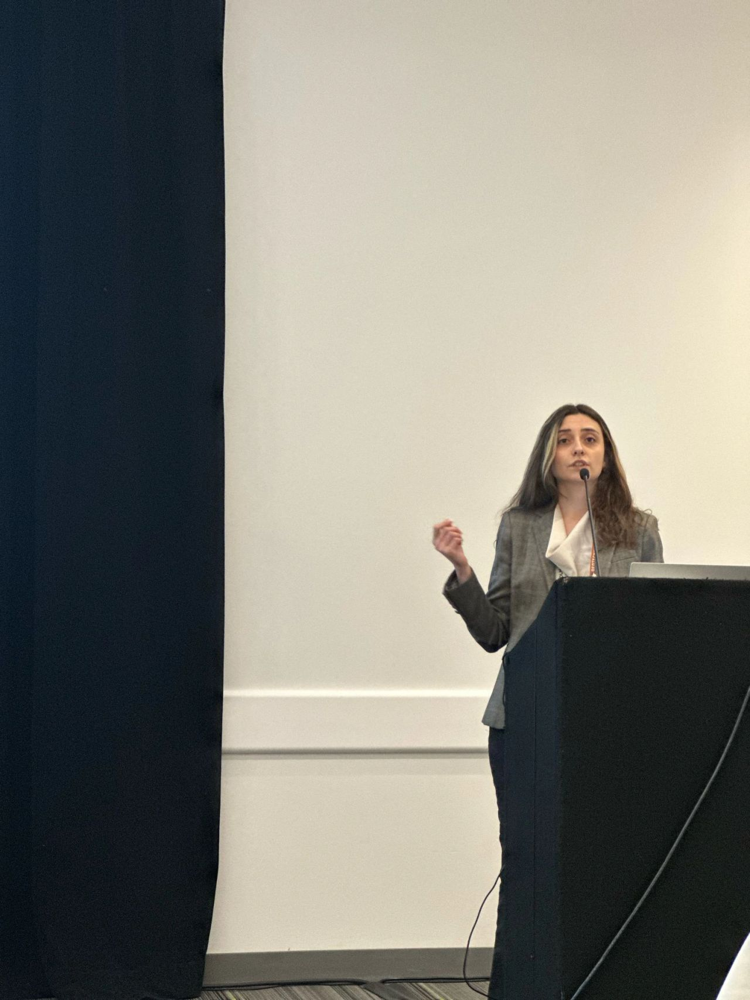
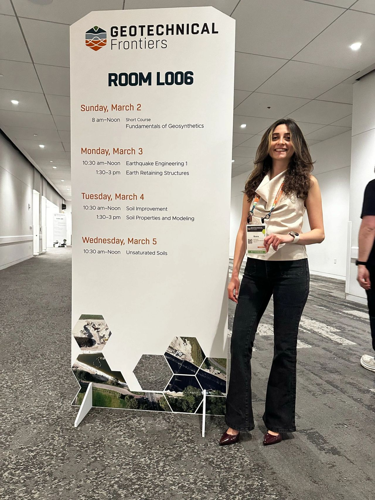
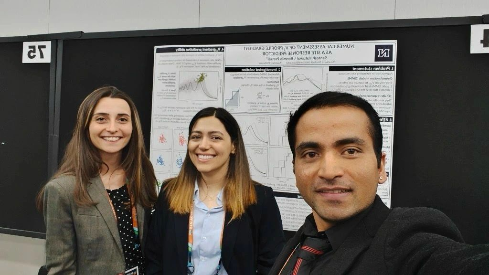
Research Experience
Graduate Research Assistant / Doctoral Researcher
Old Dominion University | 2023–Present
- Led the development of empirical frameworks integrating Did You Feel It? (DYFI) macroseismic intensity with instrumental ground-motion data to estimate peak ground acceleration (PGA) and assess whether community-reported observations reproduce instrumental path-attenuation behavior.
- Designed reproducible large-scale data workflows in R and GIS combining 1,456 earthquakes, more than 86,000 instrumental ground-motion records, over 560,000 DYFI reports, and approximately 14,826 paired DYFI–ground-motion observations.
- Developed and systematically evaluated linear, exponential, quadratic, and bilinear intensity-to-ground-motion conversion models incorporating magnitude, rupture distance, and VS30 to account for source, path, and site effects.
- Established a model-evaluation framework using adjusted R2, mean squared error (MSE), residual diagnostics, hypothesis testing, and comparisons with established ergodic ground-motion models.
- Investigated the robustness of DYFI-derived ground-motion estimates using both ZIP-code-based and 1-km geocoded intensity datasets and evaluated their implications for conversion modeling and path attenuation.
- Co-developed a nonstationary, subregion-dependent spatial correlation framework for earthquake ground motions using multi-event Pearson correlations, Fisher transformation, spatial gridding, and Bayesian regression; evaluated regional variability across 322 California subregions.
- Conducted geotechnical field investigations using three-component ambient-noise measurements to evaluate horizontal-to-vertical spectral ratio (HVSR) methods for subsurface characterization and interpolation of stratigraphy from limited boring information.
- Contributed to laboratory characterization of sand for a U.S. Air Force STTR-funded resilient-basing project, including monotonic and cyclic direct shear testing to determine frictional and dynamic soil properties under repeated and high-frequency loading.
Selected Research Projects
DYFI-Based Ground-Motion Conversion and Path Attenuation Modeling
Doctoral Research | Old Dominion University
- Research objective: Lead research evaluating whether DYFI macro seismic intensity observations can provide reliable estimates of instrumental ground motions and reproduce path-attenuation trends observed in recorded earthquake data.
- Methods: Developed workflows integrating instrumental records with ZIP-code-based and 1-km geocoded DYFI observations; developed MMI-to-PGA models incorporating magnitude, rupture distance, and VS30; and evaluated predictive performance and attenuation behavior through residual analysis, statistical testing, and comparison with established models.
- Key result/contribution: Developed an upgraded DYFI-to-PGA modeling framework and demonstrated consistency between ZIP-code-based and 1-km geocoded datasets, supporting the potential use of community-reported earthquake observations in regions with sparse instrumental coverage.
Cyclic Direct Shear Characterization of Sand for Rapidly Deployable Hardened Shelters
U.S. Air Force STTR-Funded Research
Selected photographs from Direct Shear Test
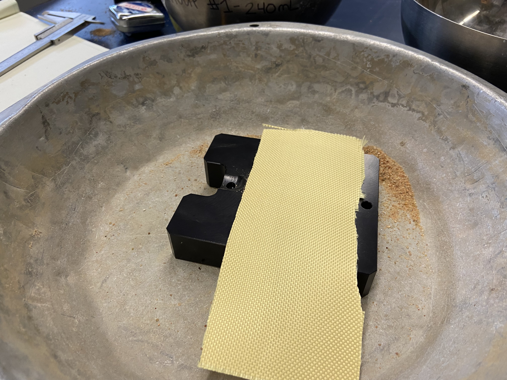
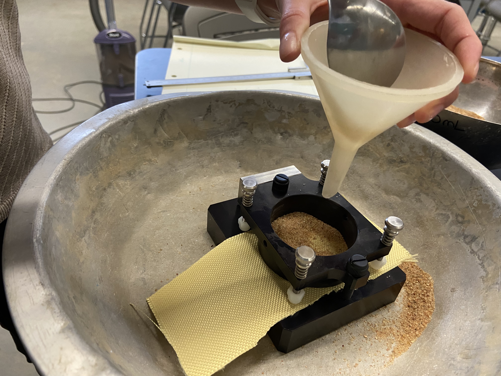
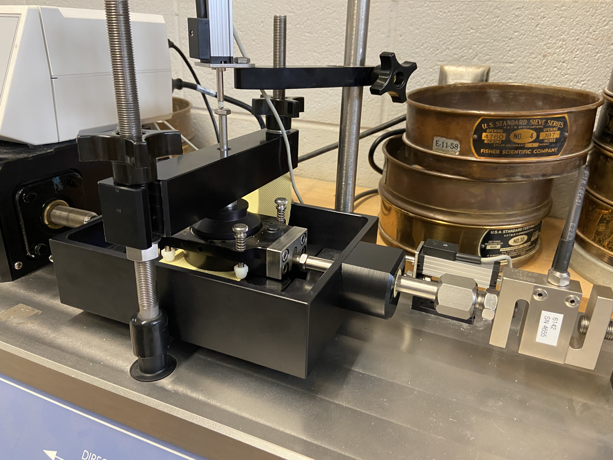
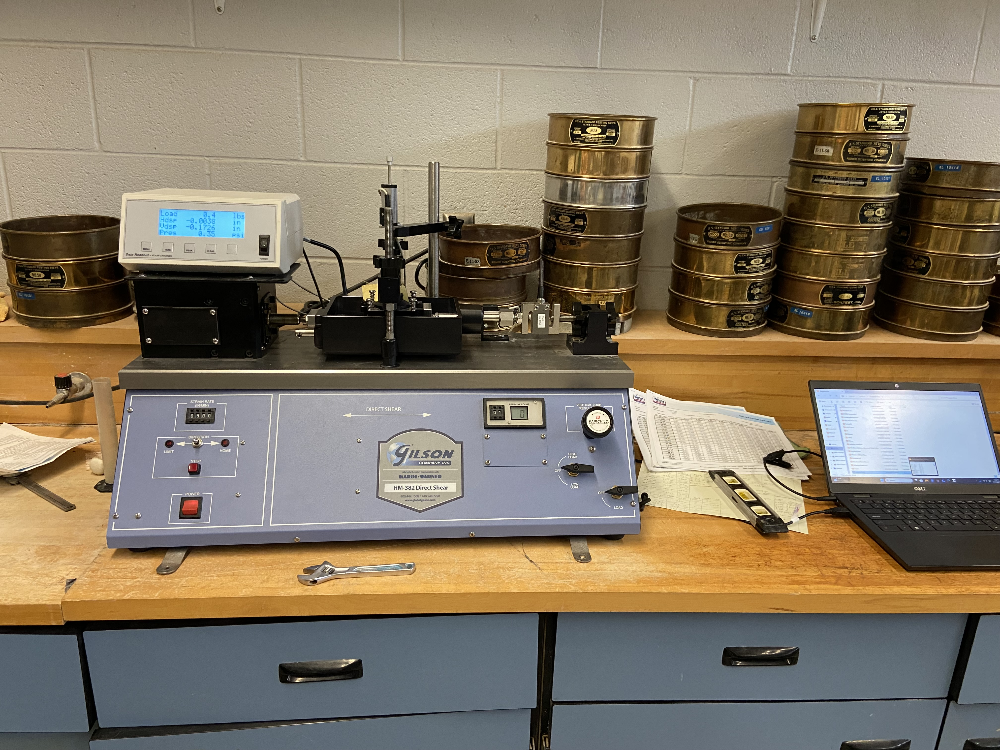
- Research objective: Support the development of rapidly deployable, low-logistics hardened shelters for resilient basing in which sand serves as a primary wall material.
- Methods: Characterized sand behavior through monotonic direct shear testing to determine shear strength and friction angle and cyclic direct shear testing to investigate dynamic response under repeated loading.
- Ongoing research: Contributing to the characterization of sand under high-frequency cyclic loading and the development of a customized dynamic-property model suitable for the loading conditions associated with the proposed shelter system.
- Key contribution: Provided experimentally derived geotechnical parameters needed to characterize the static and dynamic behavior of the sand material used in the structural system.
Nonstationary Spatial Correlation Modeling of Earthquake Ground Motions
Collaborative Research | Old Dominion University
- Research objective: Characterize regional variability in earthquake ground-motion spatial correlation and investigate the limitations of representing California using a single stationary correlation model.
- Methods: Applied multi-event paired ground-motion observations, Pearson correlation, Fisher transformation, spatial subdivision, and statistical/Bayesian regression to estimate spatially varying correlation structures.
- Key contribution: Helped develop and evaluate a nonstationary spatial-correlation framework that captures regional differences in ground-motion dependence and provides a more locally representative alternative to statewide stationary models.
Ambient-Noise Field Investigation for Subsurface Characterization and Land-Subsidence Studies
Old Dominion University Summer Seed Grant | 2023
- Research objective: Conduct a preliminary investigation of three-component ambient-noise measurements collected at the ground surface as a noninvasive approach for subsurface characterization in the Hampton Roads region.
- Methods: Participated in field data collection and analysis of horizontal-to-vertical spectral ratios (HVSR) derived from ambient-noise measurements to investigate relationships between surface measurements and subsurface stratigraphy.
- Key contribution: Evaluated the potential of ambient-noise measurements to supplement limited boring information and support interpolation of subsurface stratigraphy, with the broader objective of improving regional land-subsidence characterization.
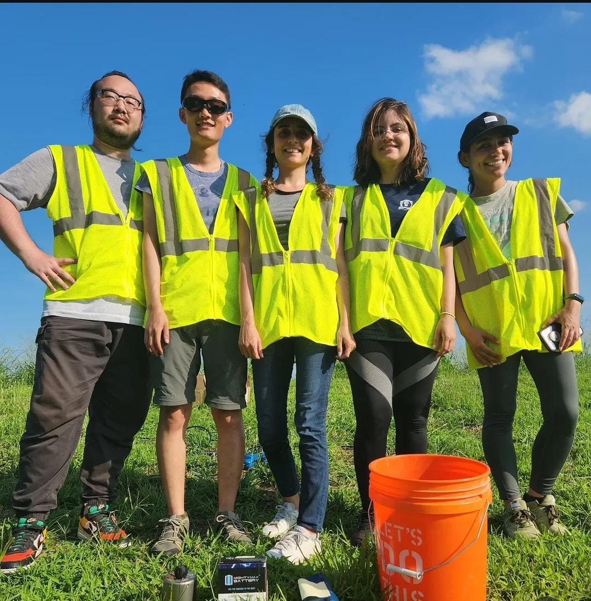
Conference Presentations
Oral Presentations
- Bocekli, B., & Wang, P. (2026). “Do ‘Did You Feel It?’ Intensity Data Provide Consistent Path Attenuation with Instrumental Recordings?” 13th National Conference on Earthquake Engineering (13NCEE), Portland, Oregon.
- Wang, P., & Bocekli, B. (2025). “A New Methodology for Earthquake Ground Motion Spatial Correlation.” Geotechnical Frontiers 2025, Louisville, Kentucky.
- Bocekli, B., & Wang, P. (2024). “Can ‘Did You Feel It?’ Intensity Data Be Used in Ground Motion Modeling?” IEEE Women in Systems Engineering (WiSE) Graduate Student Sprint, virtual presentation.
Poster Presentations
- Bocekli, B., & Wang, P. (2024). “Can ‘Did You Feel It?’ Intensity Data Be Used in Earthquake Ground Motion Modeling?” Old Dominion University Graduate Student Government Association Research Conference , Norfolk, Virginia.
Peer-Reviewed Journal Publications
- Wang, P., Bocekli, B., Yang, J., Brandenberg, S. J., & Stewart, J. P. (2026). “Nonstationary Spatial Correlation of Earthquake Ground Motions in California.” Earthquake Spectra, 42(3), e70083. https://doi.org/10.1002/esp4.70083
Manuscripts Under Review
- Bocekli, B., & Wang, P. “Can DYFI Intensity Data Improve Path Attenuation Modeling Under Sparse Instrumental Coverage?” Earthquake Spectra. Under review.
Manuscripts in Preparation
- Bocekli, B., & Wang, P. “Evaluating Site Effects in DYFI Intensity Data Against Ground-Motion Recordings.” In preparation.
Refereed Conference Proceedings
- Bocekli, B., Wang, P., et al. (2026). “Do ‘Did You Feel It?’ Intensity Data Provide Consistent Path Attenuation with Instrumental Recordings?” Proceedings of the 13th National Conference on Earthquake Engineering (13NCEE) , Portland, Oregon, USA.
- Wang, P., & Bocekli, B. (2025). “A New Methodology for Earthquake Ground Motion Spatial Correlation.” Geotechnical Frontiers 2025, pp. 170–180. https://doi.org/10.1061/9780784485996.017